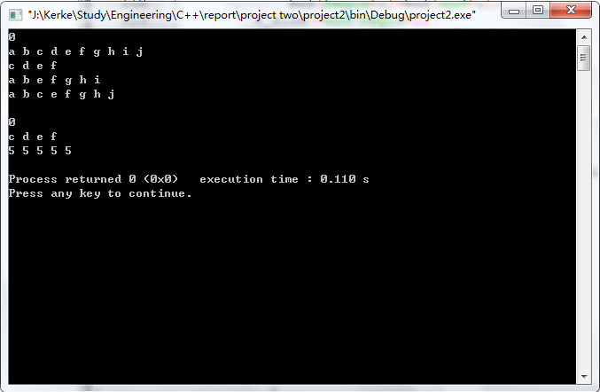

要求
编写vector类，实现动态的建立，插入，删除等功能。
知识点
- 构造函数
定义对象时调用该函数，可以定义许多个不同的构造函数 - 析构函数
释放对象时调用该函数，只有一个 - 类模板
1
template<class T>
- 重载运算符
- const修饰词的运用
- 头文件的编写
实现
方法
在实验过程中，如何实现动态分配空间是最重要的点。为了使得分配的内存空间连续，我首先给对象分配一个固定长度的连续空间，一旦插入元素的个数大于容量，需要对数组进行扩容，即重新分配空间，都会将当前容量扩充至原先的两倍，实现动态数组的功能。
代码
头文件
1 |
|
测试代码
1 |
|
运行结果

Q&A
为什么要重载赋值运算符？
答：不重载赋值运算符直接赋值的话，要赋值的对象将简单拷贝原对象中的所有成员值。如果类成员中有指针变量，那么仅仅拷贝的是指针地址值，而非指针指向值。这样的做容易造成内存的二次释放，造成严重的错误。因此需要重载赋值运算符重载时需要注意哪些问题？
答：返回值的时候要返回引用，可以避免不必要的内存开销。为什么要有返回值？
答：可以允许连续赋值。如果出现类似于执行a=a的情况，代码应如何处理保证操作正确。
答：首先开辟一个新的动态空间，容量capacity与原对象相同，且将原对象中的数组值拷贝到新的动态空间中。然后释放当前对象的动态空间，并将数组指针指向刚刚开辟的新的动态空间首地址。说明重载下标操作[ ]的两个函数的异同，以及应用场景？
答：T& operator返回第n个数组元素，允许通过返回的函数值修改所访问的数据。
const T& operator const以常引用的方式返回第n个数组元素，返回的成员只读，不允许通过返回的函数值修改所访问的数据。一般不希望元素被修改的时候使用。针对自己的代码，考察插入和删除元素时的运行效率问题，动态分配空间的频率，以及可以如何提升效率？
答：插入元素时，需要n-pos+1次赋值，故时间复杂度为O(n)，其中在末尾插入时间复杂度是O(1)。但是一旦插入元素的个数大于容量，需要对数组进行扩容，即重新分配空间，该操作是O(n)的。
删除元素时，需要n-pos次赋值，故时间复杂度也为O(n)，其中在末尾删除的时间复杂度为O(1)。删除元素的函数中没有释放多余空间，仅仅在清空函数中有释放所有空间的函数。
所以由于每次当动态数组容量满了，都会将当前容量扩充至原先的两倍，所以动态分配空间的频率大约为logn。
如果在删除时加上释放空间的代码，可以将节省空间利用率。也可以通过链表的方式提高插入删除元素时的效率。说明不同的构造函数中，初始化操作的方式以及意义。
答：vector_ss()是默认构造函数，开辟一个内存空间，v_size赋值为0，capacity赋值为1。
vector_ss(int n)是构造一个初始大小为n的数组的函数。分配n个连续的内存空间，v_size和capacity都赋值为n。
vector_ss(int n,T t)是构造一个初始大小为n的数组，且元素均为t的函数。分配n个连续的内存空间，且将每个变量赋值为t。v_size和capacity都赋值为n。
vector_ss(const vector_ss &v)是拷贝对象v的构造函数。分配与对象v相同容量的连续内存，并拷贝v中数组的元素值。v_size和capacity分别赋值为v.size()与v.capacity。
vector_ss(const vector_ss &v,int start,int end)是拷贝对象v中start位置到end位置的元素的构造函数。分配与对象v相同容量的连续内存，并拷贝v中数组的元素值。v_size和capacity分别赋值为end-start+1与v.capacity。
结语
类可以说是C++区别于C语言最重要的一个部分，也是我想要学习的重点。类和C语言中的结构体很相似，可以看作是在结构体的基础上改进的新东西。
这个实验本身并不要求算法或者什么需要理解的数据结构，仅仅是通过完成这样一个拥有多个功能的类的实验，来让我们更好的掌握C++这门语言。